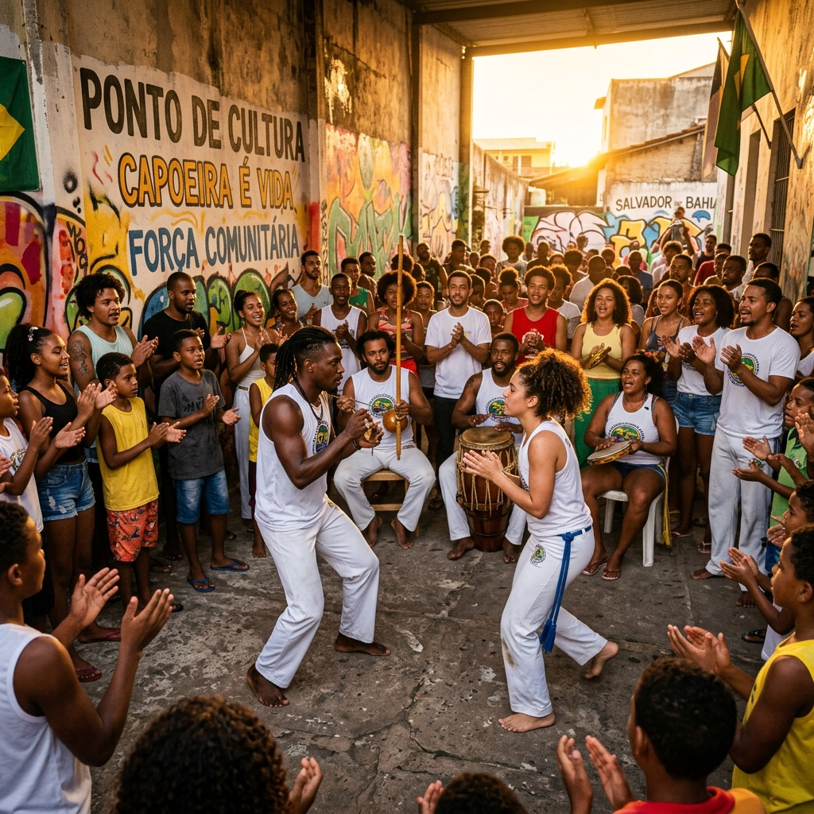
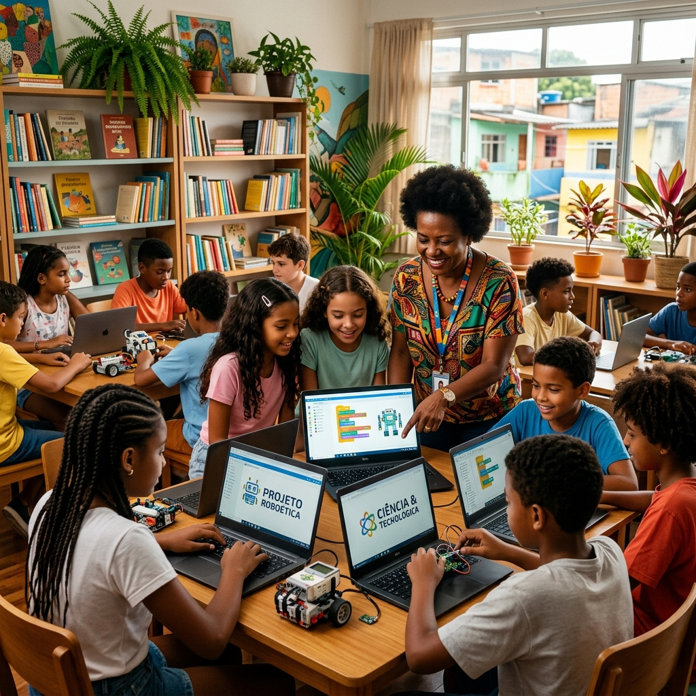
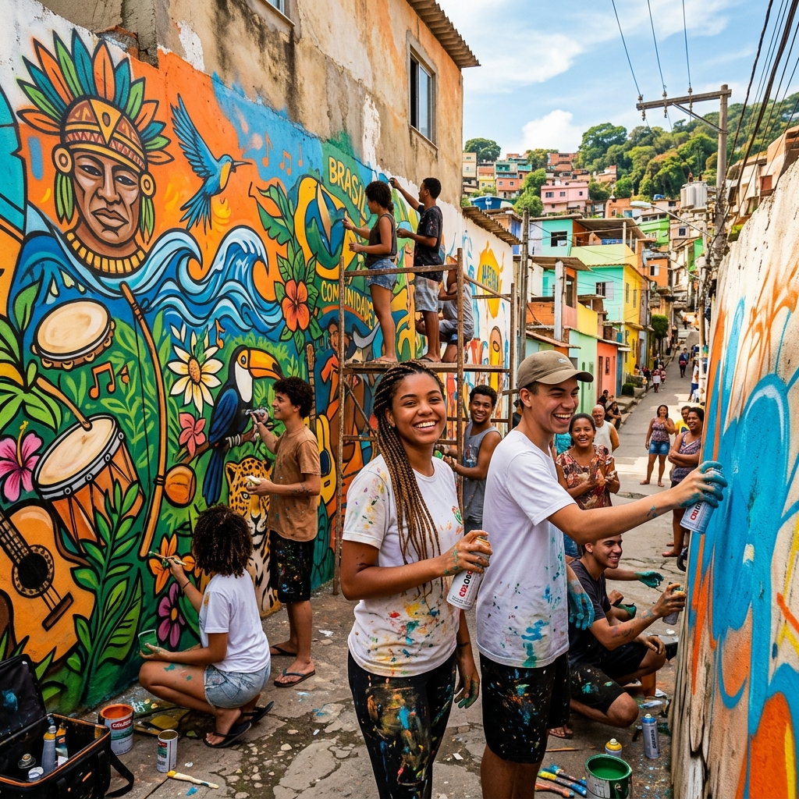

Nossa Missão
Fortalecer pessoas e comunidades por meio da cultura, da educação e da comunicação, ampliando o acesso a direitos, criando oportunidades sustentáveis de renda e incentivando a inovação social com responsabilidade.
Uma nova governança para ampliar o impacto social e cultural brasileiro.
A base ética e de governança que orienta todas as ações e projetos do IBSE.
Fortalecer pessoas e comunidades por meio da cultura, da educação e da comunicação, ampliando o acesso a direitos, criando oportunidades sustentáveis de renda e incentivando a inovação social com responsabilidade.
Ser referência nacional em gestão ética do Terceiro Setor até 2030, demonstrando que é possível unir a vitalidade das manifestações culturais periféricas com o rigor técnico, metodológico e de prestação de contas internacional.
A história do nosso Instituto é marcada por um processo profundo de transformação e amadurecimento organizacional. A entidade foi constituída em 07 de dezembro de 2021 sob o nome de Instituto Social Casa do Maranhão (ISCM). Inicialmente idealizada sob uma gestão informal, a associação desenvolveu ações importantes de assistência social e circulação cultural. No entanto, a falta de formalização burocrática robusta da gestão anterior acabou impedindo a captação de recursos estruturados, convênios de fomento público e a consolidação de apoios perenes aos seus coletivos parceiros.
Diante do crescimento das demandas sociais e da necessidade de dar suporte efetivo a agentes de cultura e lideranças da cena urbana e tradicional, em 14 de novembro de 2025, a Assembleia Geral do Instituto deu início a uma reformulação histórica. Uma nova diretoria estatutária assumiu a governança, trazendo figuras atuantes da cena cultural, especialistas em contabilidade pública, direito e gestão de projetos.
Nessa transição, a sede da entidade foi transferida de forma definitiva para a Capital Federal, e o nome da instituição foi alterado para Instituto Brasileiro de Saberes e Expressões (IBSE). Mais do que uma mudança de marca, esse momento representou a unificação e a fusão de quatro coletivos culturais e sociais atuantes para o bem comum e de abrangência nacional:
Abertura formal da entidade em formato inicial de representação e assistência comunitária regional.
Desenvolvimento de projetos comunitários nos territórios, limitados pela falta de processos formais de captação.
Eleição da nova diretoria em 14/11. Mudança para Brasília, novo Estatuto sob a marca IBSE e unificação dos 4 coletivos.
Adequação total à legislação (MROSC/LAI) e expansão das redes de fomento e parcerias em larga escala.
Adequação total à legislação (MROSC/LAI) e expansão das redes de fomento e parcerias em larga escala.
Retratos cotidianos de nossas frentes de atuação comunitária, integrando cultura popular, inclusão digital e arte urbana.



Gerida por profissionais dedicados e orientada pelas normas mais rígidas de integridade. Em conformidade com o Art. 15, § 1º do Estatuto, todos os cargos são exercidos de forma estritamente voluntária e gratuita.